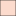

<!doctype html>
<html lang="en">
    <head>
        <meta charset="utf-8">
        <meta http-equiv="X-UA-Compatible" content="IE=edge">
        <meta name="viewport" content="initial-scale=1,user-scalable=no,maximum-scale=1,width=device-width">
        <meta name="mobile-web-app-capable" content="yes">
        <meta name="apple-mobile-web-app-capable" content="yes">
        <link rel="stylesheet" href="css/leaflet.css">
        <link rel="stylesheet" href="css/qgis2web.css"><link rel="stylesheet" href="css/fontawesome-all.min.css">
        <link rel="stylesheet" href="css/leaflet-control-geocoder.Geocoder.css">
        <link rel="stylesheet" href="css/leaflet-measure.css">
        <style>
        html, body, #map {
            width: 100%;
            height: 100%;
            padding: 0;
            margin: 0;
        }
        </style>
        <title>POPULATIO_DENSITY of Liberia_2021</title>
    </head>
    <body>
        <div id="map">
        </div>
        <script src="js/qgis2web_expressions.js"></script>
        <script src="js/leaflet.js"></script>
        <script src="js/leaflet.rotatedMarker.js"></script>
        <script src="js/leaflet.pattern.js"></script>
        <script src="js/leaflet-hash.js"></script>
        <script src="js/Autolinker.min.js"></script>
        <script src="js/rbush.min.js"></script>
        <script src="js/labelgun.min.js"></script>
        <script src="js/labels.js"></script>
        <script src="js/leaflet-control-geocoder.Geocoder.js"></script>
        <script src="js/leaflet-measure.js"></script>
        <script src="js/proj4.js"></script>
        <script src="js/proj4leaflet.js"></script>
        <script src="data/LBR_adm1_1.js"></script>
        <script>
        var highlightLayer;
        function highlightFeature(e) {
            highlightLayer = e.target;

            if (e.target.feature.geometry.type === 'LineString') {
              highlightLayer.setStyle({
                color: '#ffff00',
              });
            } else {
              highlightLayer.setStyle({
                fillColor: '#ffff00',
                fillOpacity: 1
              });
            }
            highlightLayer.openPopup();
        }
        var crs = new L.Proj.CRS('EPSG:32629', '+proj=utm +zone=29 +datum=WGS84 +units=m +no_defs', {
            resolutions: [2800, 1400, 700, 350, 175, 84, 42, 21, 11.2, 5.6, 2.8, 1.4, 0.7, 0.35, 0.14, 0.07],
        });
        var map = L.map('map', {
            crs: crs,
            continuousWorld: false,
            worldCopyJump: false, 
            zoomControl:true, maxZoom:28, minZoom:1
        }).fitBounds([[3.9598850878298846,-14.297784559580505],[8.393900465566533,-7.578397379889281]]);
        var hash = new L.Hash(map);
        map.attributionControl.setPrefix('<a href="https://github.com/tomchadwin/qgis2web" target="_blank">qgis2web</a> &middot; <a href="https://leafletjs.com" title="A JS library for interactive maps">Leaflet</a> &middot; <a href="https://qgis.org">QGIS</a>');
        var autolinker = new Autolinker({truncate: {length: 30, location: 'smart'}});
        var measureControl = new L.Control.Measure({
            position: 'topleft',
            primaryLengthUnit: 'meters',
            secondaryLengthUnit: 'kilometers',
            primaryAreaUnit: 'sqmeters',
            secondaryAreaUnit: 'hectares'
        });
        measureControl.addTo(map);
        document.getElementsByClassName('leaflet-control-measure-toggle')[0]
        .innerHTML = '';
        document.getElementsByClassName('leaflet-control-measure-toggle')[0]
        .className += ' fas fa-ruler';
        var bounds_group = new L.featureGroup([]);
        function setBounds() {
            map.setMaxBounds(map.getBounds());
        }
        map.createPane('pane_OpenStreetMap_0');
        map.getPane('pane_OpenStreetMap_0').style.zIndex = 400;
        var layer_OpenStreetMap_0 = L.tileLayer('https://tile.openstreetmap.org/{z}/{x}/{y}.png', {
            pane: 'pane_OpenStreetMap_0',
            opacity: 1.0,
            attribution: '',
            minZoom: 1,
            maxZoom: 28,
            minNativeZoom: 0,
            maxNativeZoom: 19
        });
        layer_OpenStreetMap_0;
        map.addLayer(layer_OpenStreetMap_0);
        function pop_LBR_adm1_1(feature, layer) {
            layer.on({
                mouseout: function(e) {
                    for (i in e.target._eventParents) {
                        e.target._eventParents[i].resetStyle(e.target);
                    }
                    if (typeof layer.closePopup == 'function') {
                        layer.closePopup();
                    } else {
                        layer.eachLayer(function(feature){
                            feature.closePopup()
                        });
                    }
                },
                mouseover: highlightFeature,
            });
            var popupContent = '<table>\
                    <tr>\
                        <th scope="row">ID</th>\
                        <td>' + (feature.properties['ID_1'] !== null ? autolinker.link(feature.properties['ID_1'].toLocaleString()) : '') + '</td>\
                    </tr>\
                    <tr>\
                        <th scope="row">County</th>\
                        <td>' + (feature.properties['NAME_1'] !== null ? autolinker.link(feature.properties['NAME_1'].toLocaleString()) : '') + '</td>\
                    </tr>\
                    <tr>\
                        <th scope="row">Density</th>\
                        <td>' + (feature.properties['Den'] !== null ? autolinker.link(feature.properties['Den'].toLocaleString()) : '') + '</td>\
                    </tr>\
                    <tr>\
                        <th scope="row">POPCounty</th>\
                        <td>' + (feature.properties['POPCounty'] !== null ? autolinker.link(feature.properties['POPCounty'].toLocaleString()) : '') + '</td>\
                    </tr>\
                    <tr>\
                        <th scope="row">Population</th>\
                        <td>' + (feature.properties['POPPopulation'] !== null ? autolinker.link(feature.properties['POPPopulation'].toLocaleString()) : '') + '</td>\
                    </tr>\
                    <tr>\
                        <th scope="row">Area</th>\
                        <td>' + (feature.properties['POPArea (km2)'] !== null ? autolinker.link(feature.properties['POPArea (km2)'].toLocaleString()) : '') + '</td>\
                    </tr>\
                    <tr>\
                        <th scope="row">District</th>\
                        <td>' + (feature.properties['POPNumber of districts'] !== null ? autolinker.link(feature.properties['POPNumber of districts'].toLocaleString()) : '') + '</td>\
                    </tr>\
                    <tr>\
                        <td colspan="2">' + (feature.properties['POPDate Created'] !== null ? autolinker.link(feature.properties['POPDate Created'].toLocaleString()) : '') + '</td>\
                    </tr>\
                    <tr>\
                        <th scope="row">POPArea</th>\
                        <td>' + (feature.properties['POPArea'] !== null ? autolinker.link(feature.properties['POPArea'].toLocaleString()) : '') + '</td>\
                    </tr>\
                </table>';
            layer.bindPopup(popupContent, {maxHeight: 400});
        }

        function style_LBR_adm1_1_0(feature) {
            if (feature.properties['   "POPPopulation"  /  "POPArea (km2)" '] >= 8.644649 && feature.properties['   "POPPopulation"  /  "POPArea (km2)" '] <= 11.859871 ) {
                return {
                pane: 'pane_LBR_adm1_1',
                opacity: 1,
                color: 'rgba(35,35,35,1.0)',
                dashArray: '',
                lineCap: 'butt',
                lineJoin: 'miter',
                weight: 1.0, 
                fill: true,
                fillOpacity: 1,
                fillColor: 'rgba(255,245,240,1.0)',
                interactive: true,
            }
            }
            if (feature.properties['   "POPPopulation"  /  "POPArea (km2)" '] >= 11.859871 && feature.properties['   "POPPopulation"  /  "POPArea (km2)" '] <= 14.162923 ) {
                return {
                pane: 'pane_LBR_adm1_1',
                opacity: 1,
                color: 'rgba(35,35,35,1.0)',
                dashArray: '',
                lineCap: 'butt',
                lineJoin: 'miter',
                weight: 1.0, 
                fill: true,
                fillOpacity: 1,
                fillColor: 'rgba(253,204,184,1.0)',
                interactive: true,
            }
            }
            if (feature.properties['   "POPPopulation"  /  "POPArea (km2)" '] >= 14.162923 && feature.properties['   "POPPopulation"  /  "POPArea (km2)" '] <= 27.060108 ) {
                return {
                pane: 'pane_LBR_adm1_1',
                opacity: 1,
                color: 'rgba(35,35,35,1.0)',
                dashArray: '',
                lineCap: 'butt',
                lineJoin: 'miter',
                weight: 1.0, 
                fill: true,
                fillOpacity: 1,
                fillColor: 'rgba(252,143,111,1.0)',
                interactive: true,
            }
            }
            if (feature.properties['   "POPPopulation"  /  "POPArea (km2)" '] >= 27.060108 && feature.properties['   "POPPopulation"  /  "POPArea (km2)" '] <= 38.505508 ) {
                return {
                pane: 'pane_LBR_adm1_1',
                opacity: 1,
                color: 'rgba(35,35,35,1.0)',
                dashArray: '',
                lineCap: 'butt',
                lineJoin: 'miter',
                weight: 1.0, 
                fill: true,
                fillOpacity: 1,
                fillColor: 'rgba(244,77,56,1.0)',
                interactive: true,
            }
            }
            if (feature.properties['   "POPPopulation"  /  "POPArea (km2)" '] >= 38.505508 && feature.properties['   "POPPopulation"  /  "POPArea (km2)" '] <= 53.670045 ) {
                return {
                pane: 'pane_LBR_adm1_1',
                opacity: 1,
                color: 'rgba(35,35,35,1.0)',
                dashArray: '',
                lineCap: 'butt',
                lineJoin: 'miter',
                weight: 1.0, 
                fill: true,
                fillOpacity: 1,
                fillColor: 'rgba(197,22,28,1.0)',
                interactive: true,
            }
            }
            if (feature.properties['   "POPPopulation"  /  "POPArea (km2)" '] >= 53.670045 && feature.properties['   "POPPopulation"  /  "POPArea (km2)" '] <= 599.688842 ) {
                return {
                pane: 'pane_LBR_adm1_1',
                opacity: 1,
                color: 'rgba(35,35,35,1.0)',
                dashArray: '',
                lineCap: 'butt',
                lineJoin: 'miter',
                weight: 1.0, 
                fill: true,
                fillOpacity: 1,
                fillColor: 'rgba(103,0,13,1.0)',
                interactive: true,
            }
            }
        }
        map.createPane('pane_LBR_adm1_1');
        map.getPane('pane_LBR_adm1_1').style.zIndex = 401;
        map.getPane('pane_LBR_adm1_1').style['mix-blend-mode'] = 'normal';
        var layer_LBR_adm1_1 = new L.geoJson(json_LBR_adm1_1, {
            attribution: '',
            interactive: true,
            dataVar: 'json_LBR_adm1_1',
            layerName: 'layer_LBR_adm1_1',
            pane: 'pane_LBR_adm1_1',
            onEachFeature: pop_LBR_adm1_1,
            style: style_LBR_adm1_1_0,
        });
        bounds_group.addLayer(layer_LBR_adm1_1);
        map.addLayer(layer_LBR_adm1_1);
            var title = new L.Control();
            title.onAdd = function (map) {
                this._div = L.DomUtil.create('div', 'info');
                this.update();
                return this._div;
            };
            title.update = function () {
                this._div.innerHTML = '<h2>POPULATIO_DENSITY of Liberia_2021</h2>';
            };
            title.addTo(map);
        var osmGeocoder = new L.Control.Geocoder({
            collapsed: true,
            position: 'topleft',
            text: 'Search',
            title: 'Testing'
        }).addTo(map);
        document.getElementsByClassName('leaflet-control-geocoder-icon')[0]
        .className += ' fa fa-search';
        document.getElementsByClassName('leaflet-control-geocoder-icon')[0]
        .title += 'Search for a place';
        var baseMaps = {};
        L.control.layers(baseMaps,{'LBR_adm1<br /><table><tr><td style="text-align: center;"></td><td>8.6 - 11.9</td></tr><tr><td style="text-align: center;"></td><td>11.9 - 14.2</td></tr><tr><td style="text-align: center;"></td><td>14.2 - 27.1</td></tr><tr><td style="text-align: center;"></td><td>27.1 - 38.5</td></tr><tr><td style="text-align: center;"></td><td>38.5 - 53.7</td></tr><tr><td style="text-align: center;"></td><td>53.7 - 599.7</td></tr></table>': layer_LBR_adm1_1,"OpenStreetMap": layer_OpenStreetMap_0,}).addTo(map);
        setBounds();
        var i = 0;
        layer_LBR_adm1_1.eachLayer(function(layer) {
            var context = {
                feature: layer.feature,
                variables: {}
            };
            layer.bindTooltip((layer.feature.properties['Den'] !== null?String('<div style="color: #323232; font-size: 10pt; font-family: \'Arial\', sans-serif;">' + layer.feature.properties['Den']) + '</div>':''), {permanent: true, offset: [-0, -16], className: 'css_LBR_adm1_1'});
            labels.push(layer);
            totalMarkers += 1;
              layer.added = true;
              addLabel(layer, i);
              i++;
        });
        resetLabels([layer_LBR_adm1_1]);
        map.on("zoomend", function(){
            resetLabels([layer_LBR_adm1_1]);
        });
        map.on("layeradd", function(){
            resetLabels([layer_LBR_adm1_1]);
        });
        map.on("layerremove", function(){
            resetLabels([layer_LBR_adm1_1]);
        });
        </script>
    </body>
</html>
